Module 02 — Authentification AD et habilitations¶
La transcription du support Drive et l’aide pédagogique sont séparées pour rendre leur provenance explicite.
SOURCE DRIVE · TRANSCRIPTION DU SUPPORT
Le contenu des documents du dossier TSSR est transcrit ci-dessous, page par page. Les textes et tableaux sont intégrés à la page Web. Aucun fichier PDF, aucune diapositive entière ni aucune reproduction de page n’est affiché. Seuls des croquis ou visuels isolés et vérifiés peuvent accompagner la transcription. Les versions et les consignes restent celles des supports de formation. Les compléments IA sont conservés dans leur onglet distinct.
Support · Module 02 - Support de cours · 9 pages transcrites
Administration GLPI
Module 02 – Authentification AD - Habilitations
Objectifs
- Les entités dans GLPI et la visibilité des items par récursivité
- Les interfaces de GLPI et les profils des utilisateurs
- Les intitulés et les lieux : la nomenclature de GLPI
- Création d’un compte local à GLPI
- Ajout d’une source externe d’identification (Active Directory)
- Gérer les habilitations des utilisateurs
Les entités GLPI
- Notion clé dans GLPI
- Permet de segmenter les domaines d’administration de l’application
- Intéressant pour une entreprise dont la gestion est hiérarchique
- Cloisonnement étanche entre les entités, sauf en cas de récursivité
- Cas d’une société gérant plusieurs clients avec filiales : une entité par client
Filiale A
Client1
Filiale B
Société
Client2 Filiale A
La récursivité
- Consiste à rendre visible un objet dans les sous-entités
- Permet de traiter la problématique des objets globaux et locaux
- Exemple d’utilisation : un objet de type fournisseur
- Un fournisseur global à toutes les entités sera déclaré dans l’entité la plus haute avec l’option de récursivité
- Un fournisseur local ne sera déclaré que dans l’entité à laquelle il se rattache, sans option de récursivité

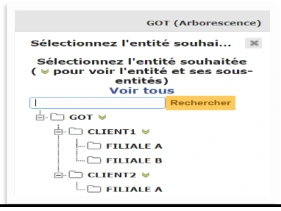

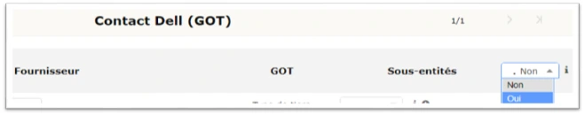
Les interfaces
- Interface simplifiée
- Interface la plus restrictive
- Destinée aux utilisateurs finaux
- Permet de créer un ticket, suivre ses tickets, accéder aux réservations et à la FAQ
- Interface standard
- Interface principale d’un technicien de GLPI
- Tous les modules y sont disponibles en fonction du profil
- Utilisée pour les tâches de techniciens, d’administration et de configuration
- 3 vues de travail : personnelle, groupe et globale
Les profils GLPI
- Détermine le type d’interface (standard ou simplifiée)
- Détermine les droits sur l’application
- Propre à une entité : récursivité possible
- Plusieurs profils possibles pour un même utilisateur
- Plusieurs profils prédéfinis :
- Super-Admin : tous les droits sur GLPI (profil de l’utilisateur GLPI)
- Admin : tous les droits d’administration
- Technician : accès en lecture à l’inventaire et à la gestion de ticket
- Hotliner : saisi et suivi de ticket, mais pas d’en être attribué
- Observer : accès en lecture à l’inventaire et à la gestion
- Self-Service : profil par défaut, interface simplifiée, permet de créer un ticket, suivre ses tickets, accéder aux réservations et à la FAQ
Attention, si le profil super-admin est supprimé ou s’il est configuré avec l’interface simplifiée, vous ne pourrez plus configurer GLPI.
La création de profils dans GLPI
- On peut donner des droits sur différentes fonctionnalités :
- Parc – gestion de l’inventaire
- Assistance – gestion des tickets
- Cycles de vie – gestion du suivi des tickets
- Gestion – gestion des licences, fournisseurs, budgets…
- Outils – gestion des rapports, de la base de connaissance, des projets, des tâches…
- Administration – gestion des différentes règles d’automatisation, des entités, des groupes…
- Configuration – gestion de la configuration globale de GLPI, les lieux, les intitulés, les calendriers...
- Il existe différents droits :
- Lecture
- Mettre à jour
- Créer
- Supprimer
- Purger
- …
Les intitulés
- Deux formats :
- Liste de valeurs à plat
- Liste de valeurs arborescente : hiérarchie entre les intitulés
- Il existe une liste par défaut, mais beaucoup de listes propres à GLPI sont paramétrables :
- Les lieux
- Les statuts de matériels
- Les fournisseurs
- Les constructeurs
- Les catégories de tickets
- Les noms de logiciels
- Les prises réseau
- Les calendriers
- …

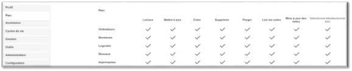

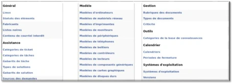
Les lieux
- Ils permettent de placer géographiquement les différents éléments d’inventaire et les utilisateurs
- Liste de valeurs arborescente
- Une convention de nommage est OBLIGATOIRE
Authentification AD
Attention, ne pas confondre les lieux et les entités.
Les noms de sites du centre de formation présents dans les captures ne sont pas reproduits ; leur fonction est d’illustrer une arborescence géographique.
Les utilisateurs – Base de comptes
- Base de comptes interne à GLPI : stockée dans la base de données
- Base de compte externe : authentification dynamique et centralisée
- LDAP
- LDAP Active Directory
- Messagerie : comptes pop/imap
- Certificats X509
- Base de compte externe : nécessite l’ajout d’un serveur d’authentification
- Import manuel possible des utilisateurs en amont
- Import automatique de l’utilisateur à la première connexion
- Champs utilisateur GLPI automatiquement alimentés depuis les attributs AD
Serveur d'authentification Active Directory
- Configuration => Authentification => Annuaires LDAP => +
- Choisir la préconfiguration ActiveDirectory
- Configuration automatique d’un filtre d’exclusion des utilisateurs désactivés
- Configuration obligatoire :
- Nom
- @ip du serveur AD
- Base DN : DistinguishedName du domaine au format :
- DC=mondomaine,DC=monTLD
- DN du compte : DistinguishedName du compte utilisé par GLPI auprès du contrôleur de domaine pour l’interroger (au minimum, un compte administrateur du domaine) au format :
- CN=administrateur,OU=administrateurs,OU,service_Active_Directory,OU=service_informatique,OU= les_utilisateurs,OU=_monentreprise,DC=mondomaine,DC=monTLD
- Mot de passe du compte précédemment renseigné
Authentification AD - Habilitations Serveur d'authentification Active Directory
Attention : Non
actif par défaut @IP du serveur
À cliquer pour avoir
ADDS
Attention : Non par défaut
les bons filtres
Info dans l’éditeur d’attribut ADDS du
compte
mondomaine.TLD
192.168.1.1
Mot de passe de l’admin du domaine
DC=mondomaine,DC=TLD
CN=compte_admin_du_domaine,OU=OU_ou_se_trouve_le_compte,DC=mondomaine,DC=TLD
Les habilitations
- Vont déterminer les droits et leurs portées dont dispose un utilisateur
- Une habilitation est composée d’un profil (droits) et d’une entité
- Récursivité sur les entités enfants possible
- Plusieurs habilitations possibles pour un même utilisateur
- Se gèrent de manière statique ou dynamique à l’aide de règle d’habilitation

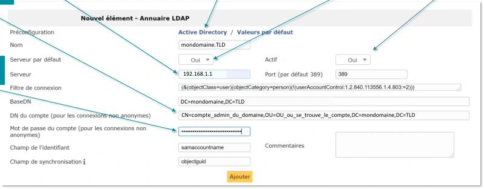
Les habilitations statiques
- Ajout manuel depuis l’application GLPI
- Aucune centralisation de la gestion des droits
- Maintenance compliquée / risque d’erreurs accru
- S’ajoutent pour chaque utilisateur
Les habilitations dynamiques
- Attribution automatique d’habilitations
- Utilisation des « règles d’affectation d’habilitations à un utilisateur »
- Toutes les règles sont lues à chaque connexion d’un utilisateur
- L’ordre de création n’a pas d’importance
- Une règle pour une habilitation
- Les critères : globaux internes GLPI ou LDAP
- Les actions : un profil, une entité, récursivité, refus d’import, etc.

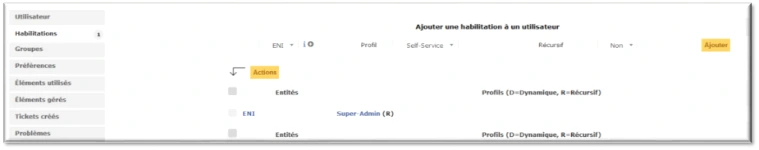
Les habilitations dynamiques - Critères - Actions
- Les critères :
- Gestion des droits GLPI centralisée dans l’Active Directory
- Utilisation d’appartenance à des groupes AD
- Critère « (LDAP) MemberOf »
- Utilisation de la condition « Contient », moins contraignante que « est »
- Les actions :
- Deux actions minimum pour constituer une habilitation
- Sont exécutées si le(s) critère(s) sont vérifiés
- Comportement en fonction de l’opérateur logique (ET/OU)
Les habilitations – Mise en œuvre
4 Création des règles
5 Vérification
Identification des différents droits des
d’affectation d’habilitations à un
Création des groupes AD pour les
utilisateurs.
utilisateur.
Exemple : vérifier le
habilitations.
Création des utilisateurs AD, assignation des groupes en fonction
du besoin.
Exemple : un technicien sur
Exemple : critère membre de
l’entité du client
GG_GLPI_technician
profil et l’entité des techniciens après import
Exemple : groupe global GG_GLPI_technician
pour le profil
dans GLPI
technician
Exemple : GG_technicien dans GG_GLPI_technician
action profil technician
entité client
Référence du document : 1cksNrO_IqX1i2ytZUujL-VyNtaXAM75Q · SHA-256 1b131977058f7c60…
Énoncé · M2 - Enoncé du TP - Liaison LDAP et ajout dutilisateurs · 6 pages transcrites
Liaison LDAP et ajout d'utilisateurs
TP du Module 2 – Authentification AD – Habilitations
Avant de démarrer ce TP, il convient d’avoir suivi les vidéos des modules 1 à 2 et d’avoir réalisé les TP proposés.
Énoncé
Objectifs
- Utiliser l’ADDS avec GLPI et utiliser le moteur de règle d’habilitations. Prérequis
- AD et GLPI fonctionnels. Principales tâches à réaliser
Structure AD et utilisateurs
- Créez les utilisateurs en fonction de l’annexe 1 (cf. fin du document).
Adoptez une convention de nommage adaptée.
- Créez les groupes globaux suivant le tableau en annexe 1.
- Créez les groupes globaux GLPI.
- Créez des modèles d’utilisateurs, dans les groupes puis les utilisateurs.
- Créez ces OU dans l’Active Directory d’Olympus en organisant convenablement sa structure en fonction de l’annexe 2.
Configuration de GLPI
- Création d’un compte local d’administration.
- Créez un utilisateur à votre nom disposant des droits maximums sur GLPI (profil
le plus haut). C’est depuis ce compte que seront effectuées toutes les manipulations qui suivront.
- Création des lieux en fonction de l’annexe 3.
- Ajout de l’annuaire LDAP
- Ajoutez le contrôleur de domaine d’Olympus comme source d’authentification LDAP.
- Vous utiliserez le compte « Administrateur » pour l’authentification auprès de
l’AD.
Règles d’habilitation
- Faites en sorte que quand un utilisateur du domaine se connecte sur GLPI, il lui soit automatiquement attribué le/les profils GLPI sur les bonnes entités du groupe (les bonnes habilitations).
Vous passerez par l’appartenance à des groupes AD pour l’attribution des habilitations.
Par ex. : si le groupe GG d’un utilisateur appartient au groupe GG_GLPI-Supervisor, alors il aura le profil Supervisor dans GLPI.
- Importez tous les utilisateurs et les mettre dans le bon lieu.
- Importez tous les groupes.
- Désactivez les utilisateurs : normal, post-only et tech.
Annexe 1
| SERVICE / FONCTION | Prénom / Nom | LOGIN | PROFIL GLPI | Groupe GG_ADDS | Lieu |
|---|---|---|---|---|---|
| Direction | Mr Ze US | Zeus | Observer | GG_dir ; GG_GLPI_observer | Temple de Zeus |
| Secrétaires de direction | Mr Heph AISTOS | Hephaistos | Sefl-service | GG_secretaires_dir | Temple de Zeus |
| Secrétaires de compta | Mme Arte MIS | artemis | Sefl-service | GG_secretaires | Temple d’Héra |
| Experts-comptables | Mme Her A | Hera | Observer | GG_experts-compta ; GG_compta ; GG_GLPI_observer | Temple d’Héra |
| comptables | Mr Her MES | Hermes | Self-service | GG_compta | Temple d’Héra |
| Stagiaires comptables | Mr Apo LLON | Apollon | Self-service | GG_stag_compta | Temple d’Héra |
| Directrice commerciale | Mme Aphro DITE | Aphrodite | Self-service | GG_dir_comm ; GG_comm | Hôtellerie |
| Commercial | Mr Ar ES | Ares | Self-service | GG_comm | Hôtellerie |
| Administrateurs informatiques | Mme Athé NA | Athena | Super-Admin | GG_admin ; GG_GLPI_Super-Admin | Salle des trésors |
| Admin AD informatique | Mme ou Mr vous | Vous | Super-Admin | GG_admin ; GG_admin_ad ; GG_GLPI_Super-Admin | Salle des trésors |
| Techniciens informatiques | Mr Po SEIDON | Poseidon | Technician | GG_techniciens ; GG_GLPI_Technician | Salle des trésors |
| Stagiaires informatiques | Mr Dio NYSOS | Dionysos | hotliner | GG_stagiaires_info ; GG_GLPI_hotliner | Salle des trésors |
Annexe 2
_Olympus
├── Les_utilisateurs
│ ├── Direction
│ ├── Service_compta / comptables
│ ├── Service_commercial / commerciaux
│ ├── secretaires
│ └── Service_info
│ ├── Administrateurs
│ ├── Administrateurs AD
│ ├── Techniciens
│ └── stagiaires
├── Les_materiels
│ ├── Les_ordis
│ │ ├── Direction
│ │ ├── Service_compta / comptables
│ │ ├── Service_commercial / commerciaux
│ │ ├── secretaires
│ │ └── Service_info
│ │ ├── Administrateurs AD
│ │ ├── Administrateurs
│ │ ├── Techniciens
│ │ └── stagiaires
│ └── Les_imprimantes
└── Les_groupes
├── Groupes_GLPI
├── Groupes_GG
└── Groupes_DL
Annexe 3


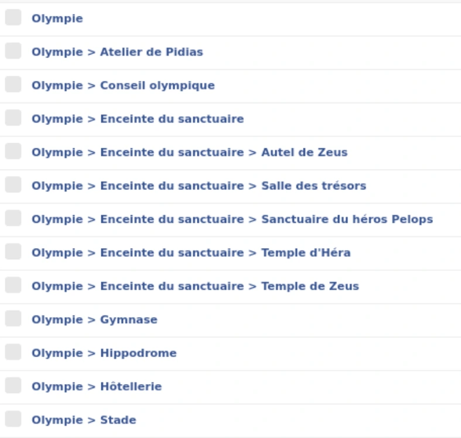
Solution
Une solution est proposée pour ce TP sous la forme d'un PDF commenté, disponible dans les ressources à télécharger, accompagnée de captures d’écran pour vous guider.
Référence du document : 16RxZGU-ytyKgIgpN68GnA4D10FkfTHBv · SHA-256 e2105de696bc150a…
Correction · M2 - Solution du TP - Liaison LDAP et ajout dutilisateurs · 9 pages transcrites
Correction originale : à consulter après avoir tenté l’exercice.
Liaison LDAP et ajout d'utilisateurs
TP du Module 2 – Authentification AD – Habilitations
Avant de démarrer ce TP, il convient d’avoir suivi les vidéos des modules 1 à 2 et d’avoir réalisé les TP proposés.
Solution
Objectifs
- Utiliser l’ADDS avec GLPI et utiliser le moteur de règle d’habilitations. Prérequis
- AD et GLPI fonctionnels.
Principales tâches à réaliser
Structure AD et utilisateurs
- Créez les utilisateurs en fonction de l’annexe 1 (cf. fin du document).
- Créez les groupes globaux suivant le tableau en annexe 1.
- Les groupes globaux dans l’AD

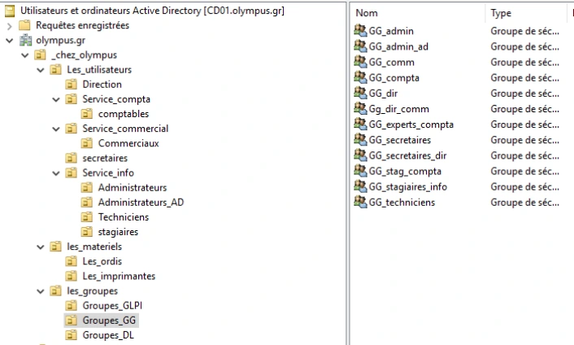
- Créez les groupes globaux GLPI.
- Les groupes GLPI dans l’AD
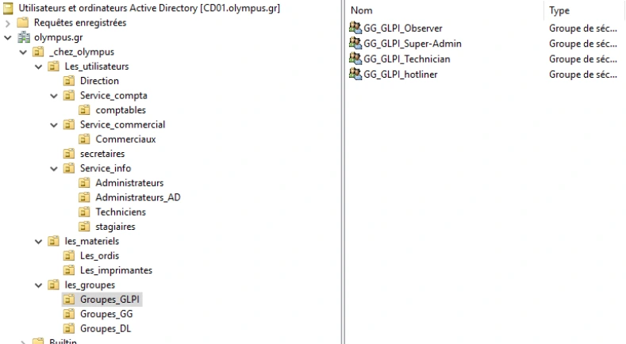
Les groupes GLPI dans l’AD - Membres du groupe GG_GLPI_Observer
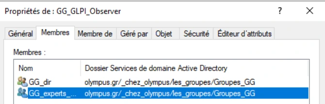
Membres du groupe GG_GLPI_Observer - Membres du groupe GG_GLPI_Super_Admin
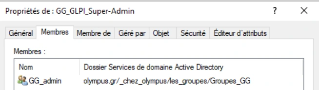
Membres du groupe GG_GLPI_Super_Admin - Membres du groupe GG_GLPI_Technician
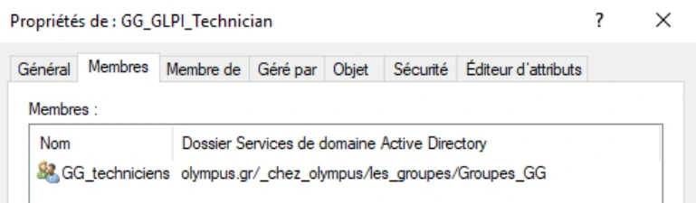
Membres du groupe GG_GLPI_Technician
- Les groupes GLPI dans l’AD


- Membres du groupe GG_GLPI_Hotliner
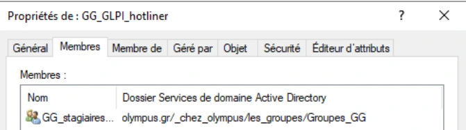
Membres du groupe GG_GLPI_Hotliner

- Créez des modèles d’utilisateurs, dans les groupes puis les utilisateurs.
- Créez ces OU dans l’Active Directory d’Olympus en organisant convenablement sa structure en fonction de l’annexe 2.
Configuration de GLPI
- Création d’un compte local d’administration.
- Créez un utilisateur à votre nom disposant des droits maximums sur GLPI (profil le plus haut). C’est depuis ce compte que seront effectuées toutes les manipulations qui suivront.
- Création des lieux en fonction de l’annexe 3.
- Ajout de l’annuaire LDAP
- Ajoutez le contrôleur de domaine d’Olympus comme source d’authentification LDAP.
- Vous utiliserez le compte « Administrateur » pour l’authentification auprès de l’AD.
- Obtenir le DN de l’administrateur
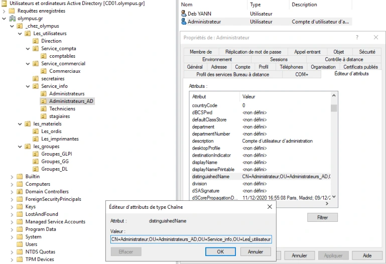
Obtenir le DN de l’administrateur

- Paramétrage de la liaison AD dans GLPI
Règles d’habilitation
- Faites en sorte que quand un utilisateur du domaine se connecte sur GLPI, il lui soit automatiquement attribué le/les profils GLPI sur les bonnes entités du groupe (les bonnes habilitations).
- Règle d’importation observer
- Règle d’importation Super_Admin

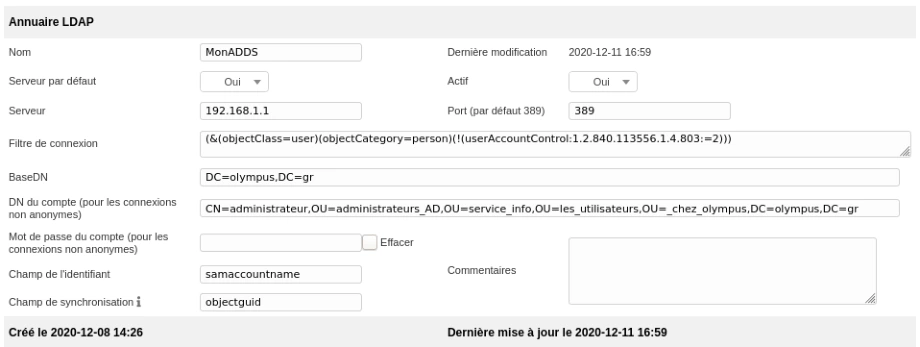

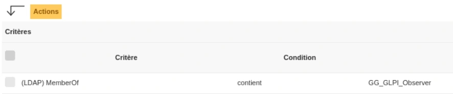

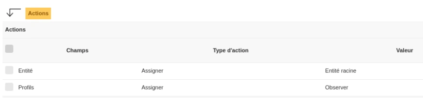

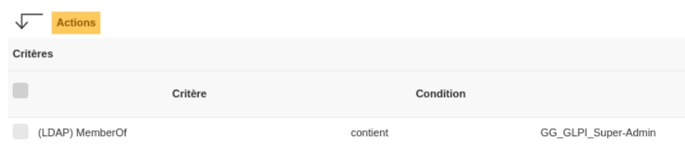
- Règle d’importation technicien
- Règle d’importation hotliner

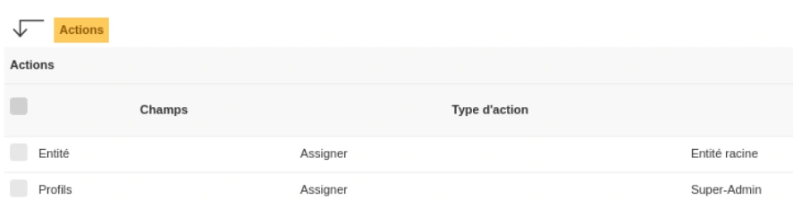

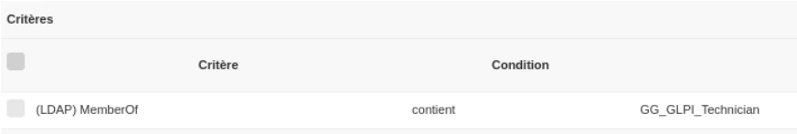

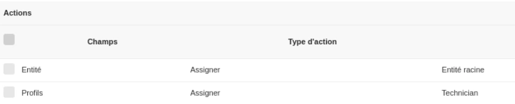

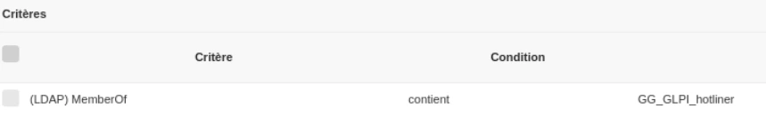

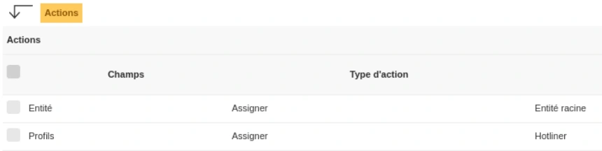
- Importez tous les utilisateurs et les mettre dans le bon lieu.
- Importez tous les groupes.
- Désactivez les utilisateurs : normal, post-only et tech.

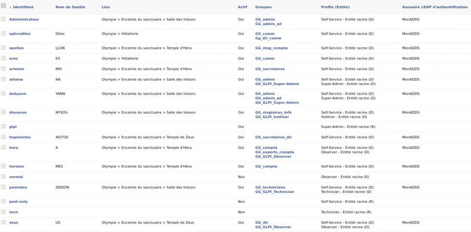

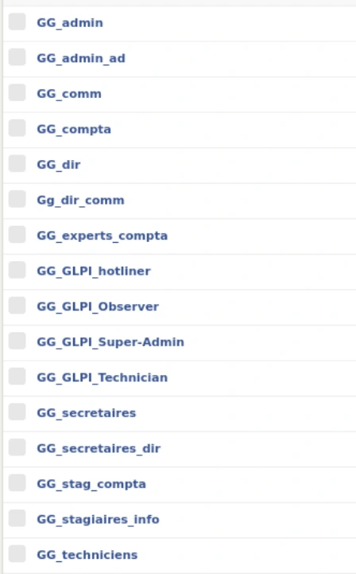
La désactivation s’effectue à partir de chaque compte utilisateurs.
Annexe 1
| SERVICE / FONCTION | Prénom / Nom | LOGIN | PROFIL GLPI | Groupe GG_ADDS | Lieu |
|---|---|---|---|---|---|
| Direction | Mr Ze US | Zeus | Observer | GG_dir ; GG_GLPI_observer | Temple de Zeus |
| Secrétaires de direction | Mr Heph AISTOS | Hephaistos | Sefl-service | GG_secretaires_dir | Temple de Zeus |
| Secrétaires de compta | Mme Arte MIS | artemis | Sefl-service | GG_secretaires | Temple d’Héra |
| Experts-comptables | Mme Her A | Hera | Observer | GG_experts-compta ; GG_compta ; GG_GLPI_observer | Temple d’Héra |
| comptables | Mr Her MES | Hermes | Self-service | GG_compta | Temple d’Héra |
| Stagiaires comptables | Mr Apo LLON | Apollon | Self-service | GG_stag_compta | Temple d’Héra |
| Directrice commerciale | Mme Aphro DITE | Aphrodite | Self-service | GG_dir_comm ; GG_comm | Hôtellerie |
| Commercial | Mr Ar ES | Ares | Self-service | GG_comm | Hôtellerie |
| Administrateurs informatiques | Mme Athé NA | Athena | Super-Admin | GG_admin ; GG_GLPI_Super-Admin | Salle des trésors |
| Admin AD informatique | Mme ou Mr vous | Vous | Super-Admin | GG_admin ; GG_admin_ad ; GG_GLPI_Super-Admin | Salle des trésors |
| Techniciens informatiques | Mr Po SEIDON | Poseidon | Technician | GG_techniciens ; GG_GLPI_Technician | Salle des trésors |
| Stagiaires informatiques | Mr Dio NYSOS | Dionysos | hotliner | GG_stagiaires_info ; GG_GLPI_hotliner | Salle des trésors |
Annexe 2
_Olympus
├── Les_utilisateurs
│ ├── Direction
│ ├── Service_compta / comptables
│ ├── Service_commercial / commerciaux
│ ├── secretaires
│ └── Service_info
│ ├── Administrateurs
│ ├── Administrateurs AD
│ ├── Techniciens
│ └── stagiaires
├── Les_materiels
│ ├── Les_ordis
│ │ ├── Direction
│ │ ├── Service_compta / comptables
│ │ ├── Service_commercial / commerciaux
│ │ ├── secretaires
│ │ └── Service_info
│ │ ├── Administrateurs AD
│ │ ├── Administrateurs
│ │ ├── Techniciens
│ │ └── stagiaires
│ └── Les_imprimantes
└── Les_groupes
├── Groupes_GLPI
├── Groupes_GG
└── Groupes_DL
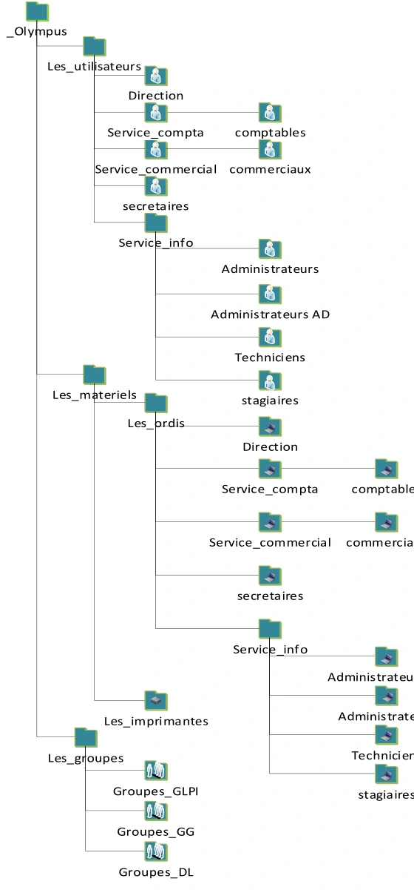
Annexe 3


Référence du document : 1Gx4uxzUmeWv1LdGU0cHmHK2OUsLHCWZN · SHA-256 f9f302f3087b7b30…
Complément IA / externe au cours — fiche pédagogique du portail
Cette fiche contient une reformulation et des aides d’apprentissage rédigées par IA. Elle est distincte de la transcription des documents du Drive et ne la remplace pas. Les schémas de synthèse de cette fiche sont des illustrations IA / externes au cours, sauf les captures explicitement attribuées à un document source.
L’authentification répond à « qui est cet utilisateur ? ». L’habilitation répond à « quels droits possède-t-il, dans quelle partie de l’organisation ? ». Une liaison LDAP qui fonctionne n’accorde donc pas, à elle seule, le bon profil GLPI.
Objectifs¶
- Séparer l’entité, le lieu et le profil dans le modèle d’habilitation.
- Raccorder GLPI à LDAP, préparer les groupes et importer les identités du scénario.
- Vérifier les droits et les refus avec des comptes distincts.
Entités, récursivité et lieux¶
Une entité segmente l’administration : par exemple une société, ses clients puis leurs filiales. Les objets d’une entité restent cloisonnés, sauf lorsqu’ils sont rendus récursifs. Un fournisseur commun peut être créé dans l’entité supérieure avec visibilité dans ses sous-entités. Un fournisseur local reste dans son entité sans récursivité.
Un lieu décrit une implantation géographique : site, bâtiment, salle. Il sert à positionner matériel et utilisateurs. Il ne remplace pas l’entité, qui règle la portée administrative. Les lieux sont arborescents et exigent une convention de nommage.
Les intitulés constituent le vocabulaire commun : lieux, statuts, fournisseurs, constructeurs, catégories de tickets, logiciels, prises réseau et calendriers. Ils peuvent être des listes plates ou des arbres. Les définir avant la saisie évite les doublons comme « Salle serveur », « salle serveurs » et « Serveur » pour un même lieu.
Profils et interfaces¶
| Profil du support | Usage principal |
|---|---|
| Super-Admin | Tous les droits de configuration et d’administration |
| Admin | Administration de l’application |
| Technician | Inventaire et gestion des tickets selon ses droits |
| Hotliner | Saisie et suivi des tickets, avec restrictions d’attribution |
| Observer | Consultation |
| Self-Service | Utilisateur final en interface simplifiée |
L’interface simplifiée donne accès à la création et au suivi de ses tickets, aux réservations et à la FAQ. L’interface standard propose les modules autorisés par le profil et les vues personnelle, groupe et globale. Un profil détermine le type d’interface ainsi que les droits de lecture, mise à jour, création, suppression et purge dans Parc, Assistance, Cycles de vie, Gestion, Outils, Administration et Configuration.
Un même utilisateur peut posséder plusieurs habilitations. Chacune associe un profil + une entité, avec une éventuelle récursivité. Il peut être technicien dans une entité et simple demandeur dans une autre. Toujours vérifier le contexte actif lors d’un test. Conserver un compte local de secours avec les droits de configuration : le support avertit qu’un Super-Admin privé de l’interface adéquate peut perdre l’accès à la configuration.
Connecter l’annuaire¶
GLPI possède une base de comptes interne. Il peut aussi interroger LDAP, LDAP Active Directory, des comptes POP/IMAP ou utiliser des certificats X509. L’annuaire externe permet une authentification centralisée et alimente les champs GLPI depuis les attributs AD.
Dans Configuration → Authentification → Annuaires LDAP, créer l’annuaire, choisir la préconfiguration ActiveDirectory, puis renseigner nom, serveur AD, BaseDN, DN du compte de liaison et secret fourni par le formateur. Les filtres préconfigurés excluent notamment les utilisateurs désactivés.
Serveur : 192.168.1.1
Base DN : DC=olympus,DC=gr
Exemple de DN de liaison :
CN=Administrateur,OU=Administrateurs_AD,OU=Service_info,OU=Les_utilisateurs,OU=_Olympus,DC=olympus,DC=gr
Le DN est un chemin LDAP, à lire depuis l’objet vers le domaine. Le relever dans l’éditeur d’attributs AD plutôt que le deviner. Le compte du TP est Administrateur ; ce choix décrit le laboratoire. Un compte de liaison disposant seulement des lectures nécessaires permet de séparer ce rôle de l’administration du domaine. Le fait de fournir un secret ne justifie pas de le publier dans une procédure.
Tester la connexion LDAP, puis distinguer import manuel préalable et import automatique à la première connexion. Vérifier également l’état « actif » et l’annuaire par défaut, que la capture source signale comme non activés automatiquement.
Construire les droits depuis les groupes AD¶
La gestion statique consiste à ajouter manuellement les habilitations à chaque utilisateur. Elle est simple pour un essai mais devient difficile à maintenir. Les règles dynamiques font correspondre une appartenance AD à un profil et une entité GLPI.
La méthode du support comporte cinq étapes : identifier les droits ; créer les groupes GLPI dans AD ; affecter les groupes métier/utilisateurs ; créer les règles d’affectation ; vérifier le profil et l’entité après import.
Illustration IA / externe au cours — schéma pédagogique de synthèse.
Ce schéma de synthèse est ajouté au support. Une règle d’habilitation possède au minimum les actions profil et entité ; la récursivité, le refus d’import et d’autres actions peuvent compléter le résultat. Le cours indique que toutes les règles sont lues à la connexion et qu’une règle correspond à une habilitation. Vérifier chaque combinaison et la logique ET/OU des critères.
La condition « contient » sur (LDAP) MemberOf est moins stricte qu’une égalité complète au DN. Elle peut aussi accepter des noms voisins : choisir un nom distinct et tester un utilisateur autorisé ainsi qu’un utilisateur qui ne doit pas recevoir le profil. L’imbrication des groupes AD et les attributs réellement remontés doivent être vérifiés dans le laboratoire ; une appartenance souhaitée ne prouve pas qu’elle est visible dans le critère LDAP.
TP — Mettre en place les habilitations Olympus¶
- Dans AD, organiser les utilisateurs, les matériels et les groupes dans les OU du scénario. Créer les groupes globaux de métier et les groupes GLPI, puis reporter les appartenances de l’annexe. Les douze identités ou fonctions sont Zeus, Hephaistos, Artemis, Hera, Hermes, Apollon, Aphrodite, Ares, Athena, le compte du stagiaire, Poseidon et Dionysos.
- Dans GLPI, créer les lieux demandés et un administrateur local nominatif. Tester ce compte avant de désactiver les comptes d’exemple. Préparer une matrice avec le groupe AD, le profil GLPI, l’entité et le lieu attendus.
- Dans Configuration → Authentification → Annuaires LDAP, déclarer le contrôleur et la base de recherche du laboratoire. Tester d’abord la connexion à l’annuaire, puis vérifier que l’utilisateur recherché est visible dans la bonne OU. Saisir le secret de liaison uniquement dans l’environnement prévu.
- Créer les règles de profils Observer, Super-Admin, Technician et Hotliner selon l’annexe. Le critère s’appuie sur l’appartenance LDAP, puis les actions affectent le profil et l’entité. Les variantes de graphie du support se vérifient dans la liste des profils de la version installée.
- Importer les utilisateurs et groupes, affecter les lieux, puis désactiver les comptes
normal,post-onlyettechcomme demandé. Conserver l’accès administrateur local vérifié à l’étape 2.
| Essai | Vérification |
|---|---|
| Un utilisateur du groupe de techniciens | Le profil Technician et l’entité sont ceux de la règle. |
| Un utilisateur autorisé à consulter | Il voit les objets attendus et ne reçoit pas des actions de modification qui dépassent son profil. |
| Un utilisateur hors du groupe ciblé | La règle ne lui attribue pas le profil testé. |
| Administrateur local | L’accès de configuration fonctionne même si la liaison LDAP ne fonctionne plus. |
Noter le profil actif et une action réussie ou refusée pour chaque essai. Si l’import fonctionne mais le profil est incorrect, vérifier le DN réellement remonté, l’appartenance effective et le critère de règle avant de modifier le compte.
À retenir¶
Le raccordement LDAP identifie l’utilisateur. Les règles déterminent le profil et l’entité. Le lieu renseigne la localisation. Une connexion réussie ne suffit pas à valider l’habilitation.
Mini-quiz¶
- Un lieu peut-il remplacer une entité pour isoler les droits ?
- Quels sont les deux éléments indispensables d’une habilitation ?
- Pourquoi garder un administrateur local ?
- Quel test permet de repérer un critère
MemberOftrop large ? - Quelles preuves ajouter après une connexion réussie ?
Réponses commentées
- Non : lieu géographique et portée administrative ont des fonctions différentes.
- Un profil et une entité ; la récursivité est une option.
- Pour conserver un accès de configuration si l’annuaire ou les règles ne fonctionnent plus.
- Tester aussi un compte dont le groupe porte un nom voisin. Le profil ciblé doit être attribué uniquement au groupe prévu.
- Relever le profil et l’entité actifs, puis essayer au moins une action attendue et une action qui doit être refusée.
Appliquer ce module¶
M02 — Authentification AD et habilitations
20 questions
Teste tes connaissances sur ce module.